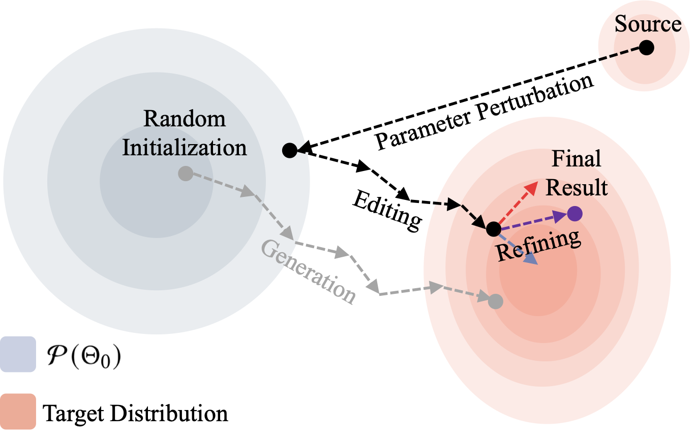
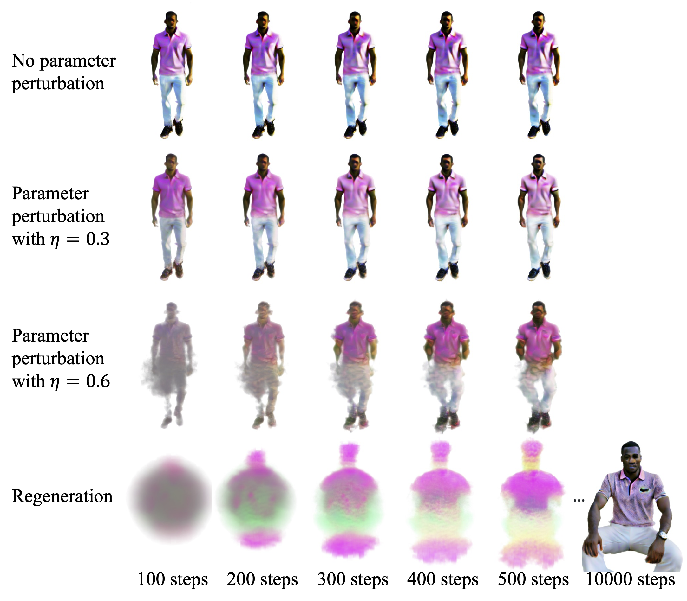
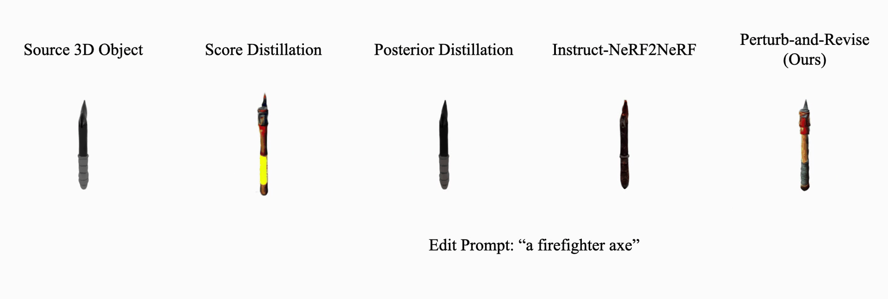
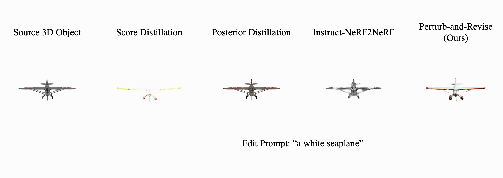

Perturb-and-Revise: Flexible 3D Editing with Generative Trajectories
1University of Washington
2Google Research
3D Object Editing


3D Scene Editing (🐻 ➡ 🐻❄️)

Method Overview
Perturb-and-Revise takes a source NeRF and an edit prompt as input and produces the edited result through: (1) versatile initialization via parameter perturbation, (2) multi-view consistent score distillation, and (3) refinement with the identity-preserving gradient.
Parameter Perturbation
Effect of parameter perturbation. In this example, we aim to make a NeRF model of a standing person sit down using just the word "sitting." The scene converges quickly even with large perturbations (η = 0.6), while complete regeneration yields blurry rendering results given the same number of optimization steps.
Objaverse Object Editing





Fashion Object Editing


Real Scene Editing

Citation
@article{hong2024perturb,
title={Perturb-and-Revise: Flexible 3D Editing with Generative Trajectories},
author={Hong, Susung and Karras, Johanna and Martin-Brualla, Ricardo and Kemelmacher-Shlizerman, Ira},
journal={arXiv preprint arXiv:2408.00760},
year={2024}
}